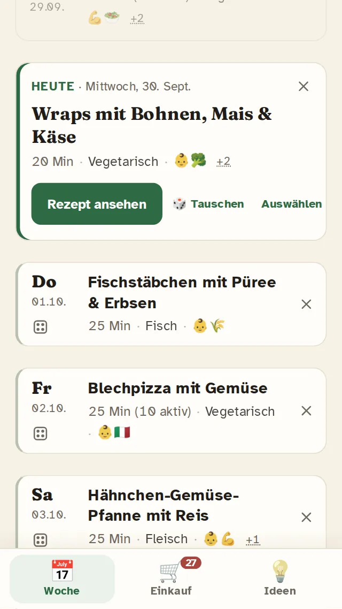
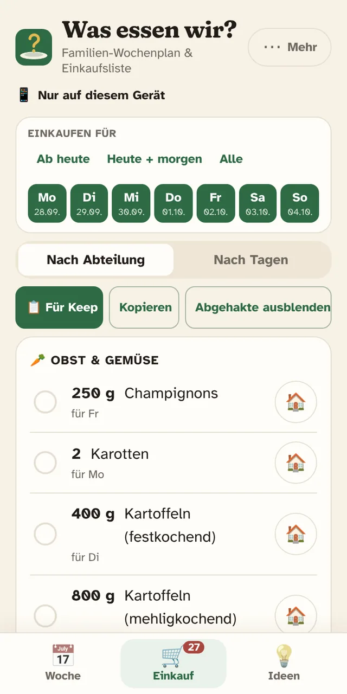
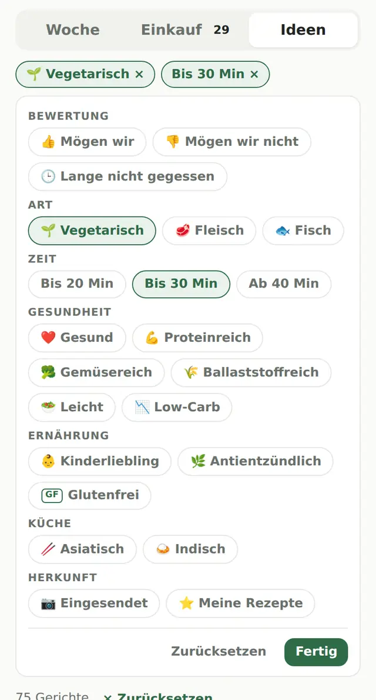
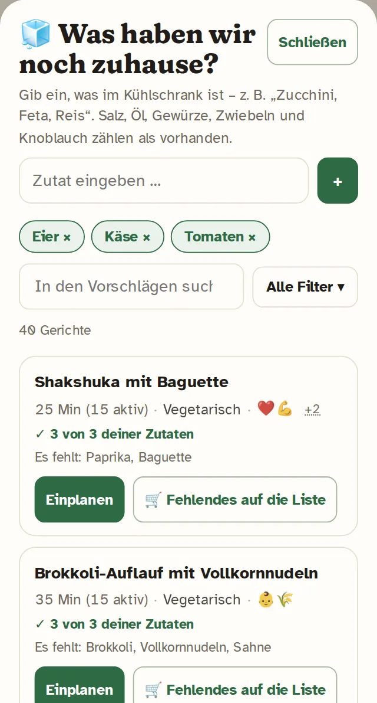

Was essen wir?
Ein gemeinsamer Wochenplan für Familien, der aus euren Vorlieben automatisch eine passende Einkaufsliste macht – ohne Konto.
App öffnenDrei Dinge, die die App kann
- Woche planen: Mit einem Tipp die freien Tage füllen – unter der Woche nur schnelle Gerichte, vegetarisch bevorzugt. Oder selbst aus über 160 Rezepten wählen.
- Einkaufsliste: Zutaten werden zusammengezählt, auf eure Personenzahl umgerechnet und nach Supermarkt-Abteilungen sortiert. Was ihr zuhause habt, nehmt ihr einmalig oder dauerhaft von der Liste.
- Ideen & Reste: „Was haben wir noch zuhause?“ zeigt passende Gerichte. Filter für vegetarisch, schnell, kindertauglich, glutenfrei, Allergene und mehr.




Gemeinsam planen
Plant zu zweit oder als ganze Familie: Mit einem privaten Link sehen alle auf ihren Handys denselben Wochenplan, dieselbe Einkaufsliste und dieselben Bewertungen 👍/👎.
Als App installieren
Öffne wasessenwir.at im Browser und wähle „Zum Startbildschirm hinzufügen“ (iPhone: Teilen-Menü, Android: Browser-Menü). Danach startet die App wie jede andere.
Datenschutz
Kein Konto, keine Werbung, kein Tracking. Ohne gemeinsamen Plan bleibt alles auf deinem Gerät. Eine Sicherung als Datei kannst du jederzeit speichern und wieder laden.
Häufige Fragen
Brauche ich ein Konto?
Nein. Die App startet sofort mit einer Beispielwoche.
Was kostet die App?
Nichts – sie ist kostenlos und ohne Werbung.
Was passiert bei einem Handywechsel?
Mit gemeinsamem Plan öffnest du auf dem neuen Handy einfach den Familien-Link. Ohne gemeinsamen Plan speicherst du vorher unter ⚙ Einstellungen eine Sicherung und lädst sie auf dem neuen Handy wieder.
Für wie viele Personen sind die Mengen?
Standardmäßig für 3 Personen (2 Erwachsene + 1 Kind). In den Einstellungen stellst du eure Personenzahl ein, alle Mengen rechnen sich um.
Kann ich eigene Rezepte hinzufügen?
Ja: selbst eingeben oder als Foto/Link einsenden.